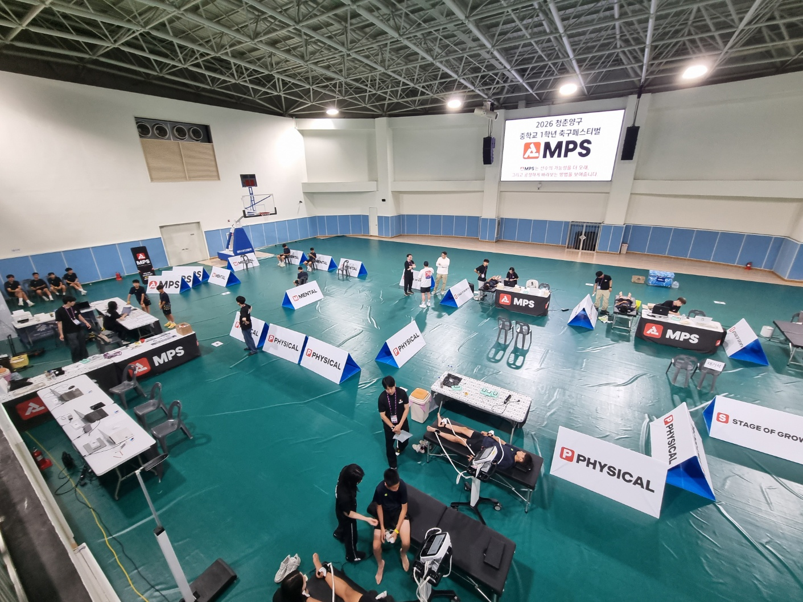

MPS CERTIFIED CLINIC / FOUNDING NETWORK 2026우리 지역의 첫
우리 지역의 첫
MPS 인증한의원
성장기 아이와 유소년 선수의
성장 · 멘탈 · 피지컬 · 회복을
하나의 데이터로 연결합니다.

GROWTH성장
MENTAL멘탈
PHYSICAL피지컬
RECOVERY회복
서울·경기
MPS Founding Partner 10개 한의원 모집
10